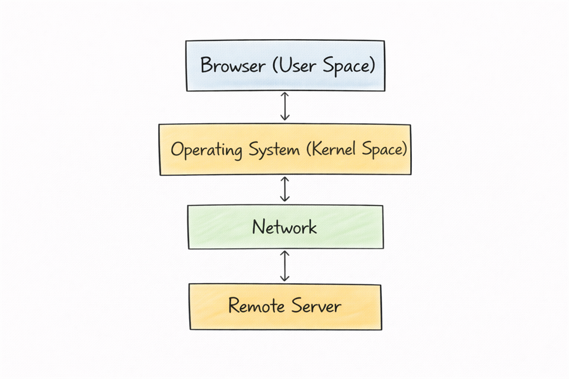
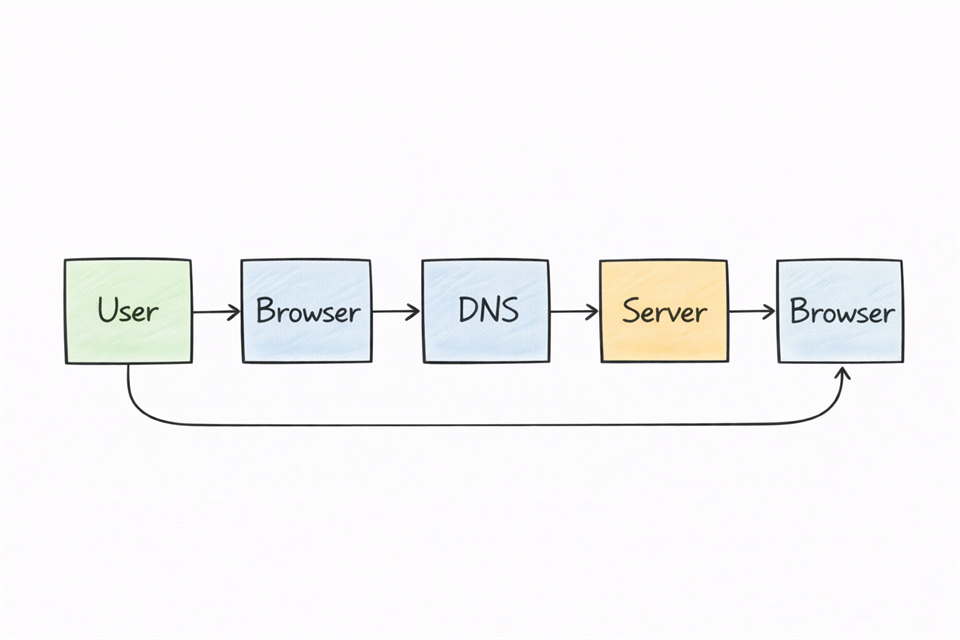

What Happens When You Type a URL Into Your Browser? (Step-by-Step Explanation)
This post explains, in simple terms, what happens behind the scenes when you type a URL into your browser and press Enter. The goal is to connect concepts from networking and operating systems into one clear, step-by-step mental model.
Step 1: The Browser Understands the URL
When you type a URL into your browser, the browser first interprets what you entered. It identifies the protocol (usually HTTPS), the domain name, and the resource path, if there is one.
Before anything else can happen, the browser needs to understand where you are trying to go and how to talk to that destination. At this stage, nothing has been sent over the network yet; it is all local parsing and preparation.
Step 2: DNS - Finding the Website's Address
Computers do not understand domain names the way humans do. They communicate using IP addresses. To bridge this gap, the browser and operating system rely on the Domain Name System (DNS).
DNS acts like the internet's phonebook. It translates a human-friendly name like example.com into an IP address such as 93.184.216.34.
Behind the scenes, your system asks a DNS resolver:
“What is the IP address of this domain?”
Once the IP address is returned, your system knows where to send the request. From your perspective, this feels instant, but it is a crucial lookup step in every web request.
Step 3: Establishing a Connection
With the IP address known, your system now needs to connect to the server. This connection is usually made over TCP, which provides a reliable channel between your device and the remote server.
If the website uses HTTPS, which most modern sites do, an additional security layer is added on top. Your browser and the server perform a handshake to agree on encryption keys and algorithms.
Only after this secure channel is established does the browser start sending the actual HTTP request. This is what ensures your data is protected while it travels across the network.
Step 4: The Operating System's Role
The browser is not working alone. It relies heavily on the operating system to make all of this possible.
The operating system manages network communication, allocates memory, handles process execution, and coordinates data transfer. When the browser wants to send data, it makes system calls that enter the kernel, where the network stack lives.
This ties directly into the idea of user space and kernel space: the browser runs in user space and must ask the operating system to perform low-level operations safely on its behalf. Understanding this separation helps explain why applications cannot directly access hardware or the network without going through the OS.

Step 5: The Server Responds
Once the request reaches the server hosting the website, the server takes over. It receives the request, processes it, and decides what response to send back.
In many cases, the server may run application code, talk to databases, or fetch other resources before preparing a response. The final response usually includes HTML for structure, CSS for design, JavaScript for interactivity, and references to images or other assets.
All of this is packaged into HTTP responses that are sent back to your browser over the established connection.
Step 6: The Browser Builds the Page
When the data arrives, your browser begins constructing the page. It reads the HTML, builds the Document Object Model (DOM), applies CSS styles, executes JavaScript, and loads additional resources such as images and fonts.
This process is extremely fast and usually completes in a fraction of a second. What you see as a finished page is the result of many coordinated steps happening in the background.
Why This Process Matters
Understanding what happens when you type a URL helps you see how networking and operating systems interact in practice. It highlights the role of DNS, shows why HTTPS and encryption matter, and illustrates how browsers, operating systems, and servers cooperate.
For learners, this mental model connects multiple computer science concepts into one real-world example. It also reinforces that everyday actions on a computer are backed by well-defined protocols and system behavior.
A Simple Flow Overview
At a high level, the sequence looks like this:
- You type a URL into your browser.
- The browser parses the URL and determines the protocol and domain.
- DNS is used to find the IP address for the domain.
- A connection (often HTTPS over TCP) is established with the server.
- The browser sends an HTTP request.
- The server processes the request and sends back a response.
- The browser renders the page on your screen.

This entire process typically happens in less than a second, even though many systems are involved along the way.
Conclusion
What seems like a simple action, typing a URL and pressing Enter, triggers a coordinated interaction between your browser, operating system, DNS servers, network devices, and remote web servers.
Building an intuition for this sequence strengthens your foundation in networking, operating systems, and web development. It turns everyday browsing from a passive habit into something you can actively understand and reason about.